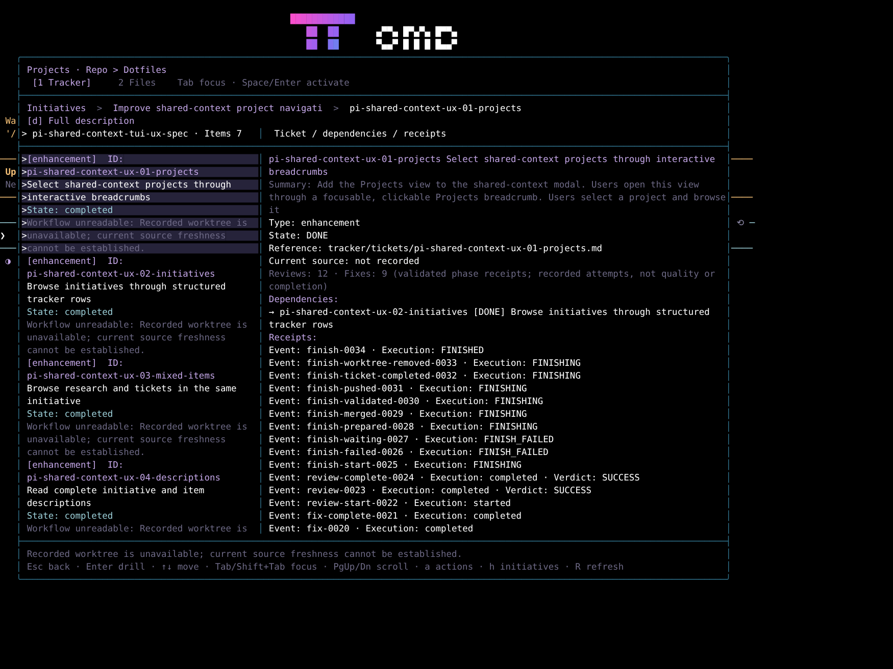
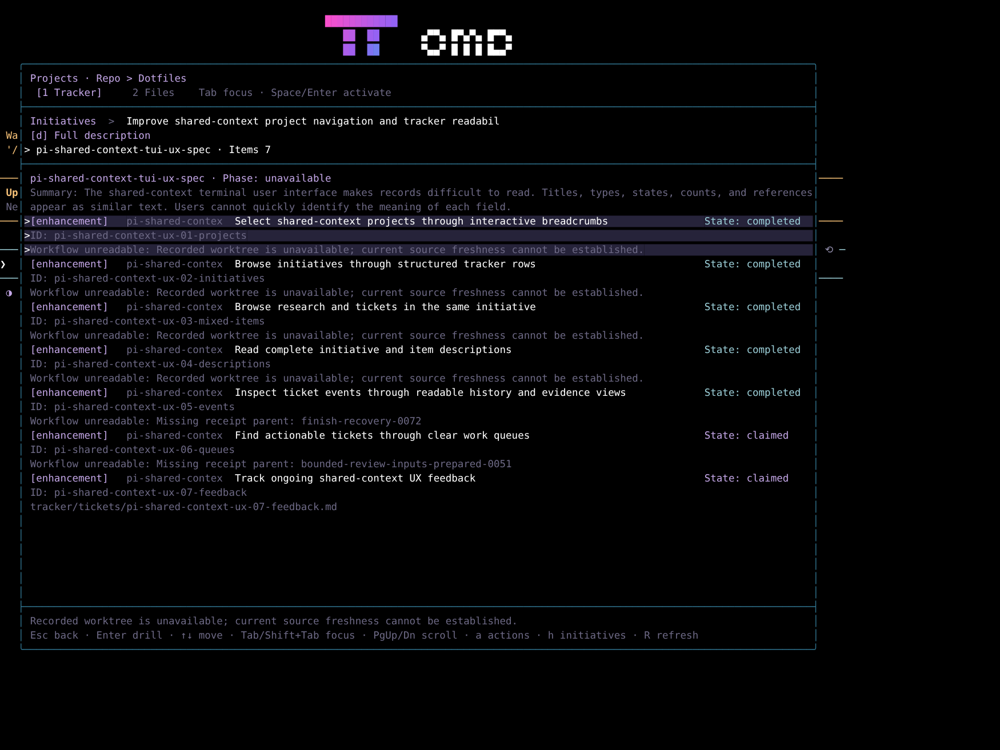
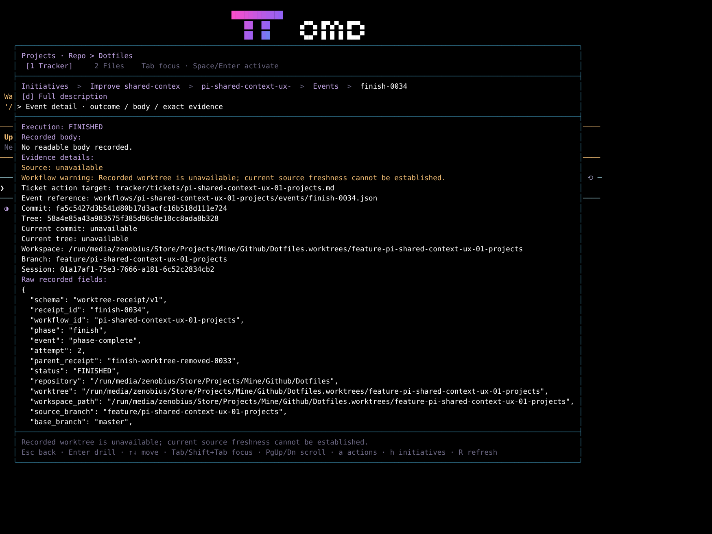
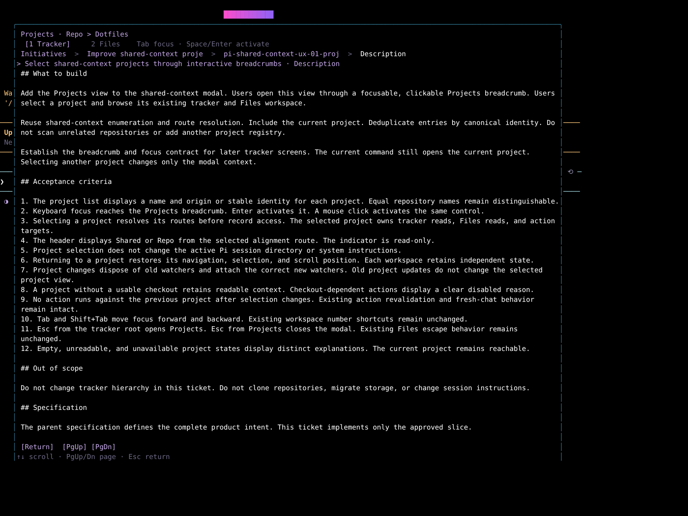
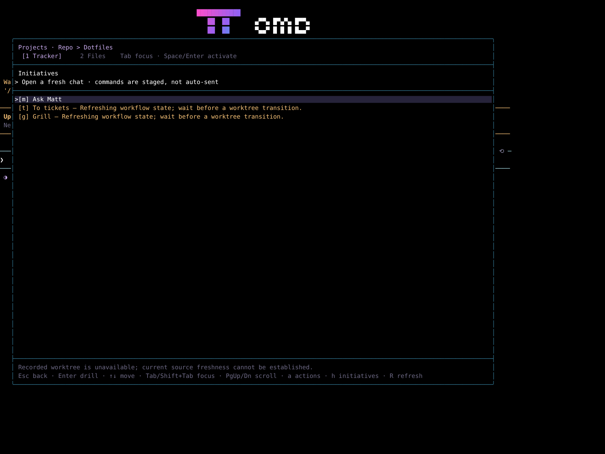

Shared-context full-colour evidence
Fresh read-only capture for pi-shared-context-ux-07-feedback. Captured foreground and background colours are preserved.
Result summary
Selection Observed
The selected ticket retained a tinted background across its eight rendered lines. Every line also displayed an arrow. Ticket metadata and receipt rows filled the right pane without blank field separators.

Loaded ticket list Observed
Six ticket rows contained workflow warnings. Items followed one another without blank separator rows. The first ticket snapshot already had loaded warnings; this run does not prove the loading transition.

Receipt details Observed
The event detail opened through Enter from the ticket, then Enter from the event list. Its execution, body, source, reference, commit, tree, workspace, branch, and session fields appeared on consecutive lines.

Markdown description Observed
The d key opened the ticket description. The body used the same dark canvas as the surrounding reader. No distinct body background or padded inset panel was visible. This shows the current description reader, not a pixel match against the original attachment.

Initiative actions Partial evidence
The action menu exposed Ask Matt, To tickets, and Grill. The footer exposed navigation keys but no path-copy key. Clipboard contents were not tested. The menu also displayed workflow-refresh reasons for two actions; this report records that state without diagnosing it.

Method and source
A fresh ephemeral omp process ran inside termscope at 140 columns and 50 rows. TERM=xterm-256color, COLORTERM=truecolor, and FORCE_COLOR=3 were set for this process only. No model prompt or implementation agent ran.
termscope session -- omp --no-session --no-tools --no-titleA truecolour probe showed that termscope HTML and style-span outputs retain RGB foreground and background values. Its SVG export instead rendered the probe as white text on black. This corrects the earlier report's general statement about colour loss: the limitation belongs to the SVG export, not all termscope formats.
PNG screenshots came from Chromium rendering termscope's HTML snapshots. The HTML wrapper sets a black default canvas, white default text, and monospace typography. Explicit captured colours remain unchanged. These are colour-preserving terminal-state renderings, not desktop terminal screenshots. Browser font metrics can differ from a native terminal.
HEAD was 1e6b0eb8c952532b7b6a1b3756266aad9b7ade00; tree was e6165b78a3c2a6c3de53e58e2a082c4ef1f0771e. Existing uncommitted changes affected shared-context actions.ts and index.ts. The capture describes this working copy, not a clean build of HEAD.
- Source identity, hashes, environment, and shutdown record
- Termsccope interaction log and snapshot responses
- Original ticket detail style spans
- Colour-preserving ticket detail HTML
- Original description style spans
Not covered
- The compact loading state and loading transition were not captured. Their behaviour remains unproved by this run.
- Clipboard bytes were not checked. Copy success and parity with ticket path-copy remain unverified.
- This run did not compare the six original attachments pixel by pixel or test a UI fix. No acceptance pass is claimed.
- Native terminal font metrics and continuous video were not captured. Original HTML, spans, text, and JSON remain available for inspection.
State left behind
The ephemeral capture process stopped. The report server remains available on local port 8766. No ticket, source, configuration, or workflow phase was changed. No receipt was created. The earlier evidence remains unchanged. New evidence remains local and uncommitted.